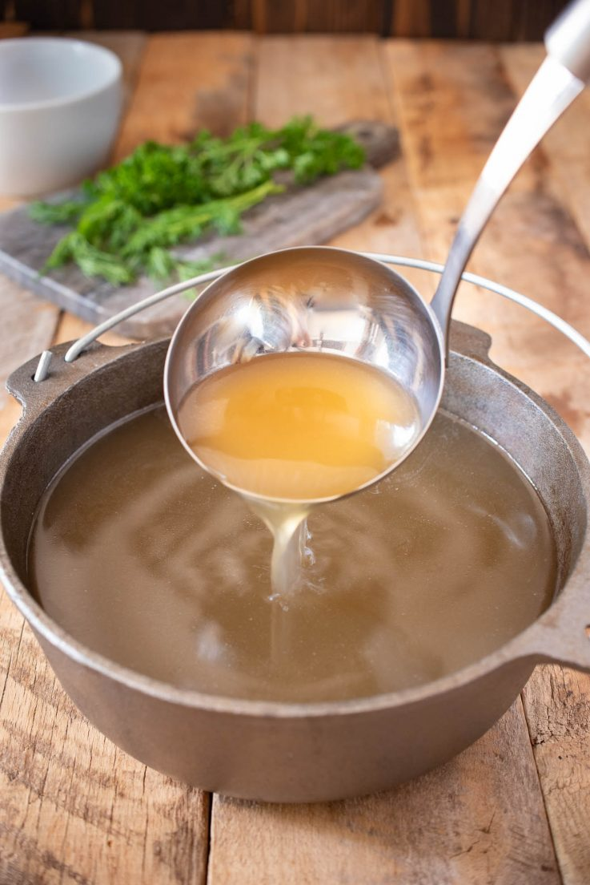

Homemade Chicken Bone Broth Soup

Description
This is an easy recipe to make homemade chicken bone broth. It can be stored in the freezer to be used for later in lots of soup recipes!
Ingredients
- Chicken backs or Chicken bones
- Left over veggies like carrots, celery, etc.
- Garlic with skins attached
- 1 onion with skins attached cut in 4ths
- Water
- Bay leaf
- Salt and pepper
- Thyme
- Oregano
- Tumaric
Preparation Instructions
- Place all ingredients except for water in a slow cooker
- Fill slow cooker with water
- Cover slow cooker
- Turn on low for 6 hours
- After the 6 hours strain ingredients into a seperate container to discard everything but remaining liquid broth